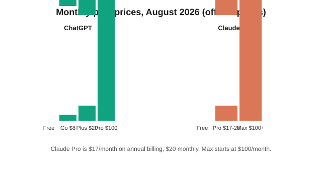
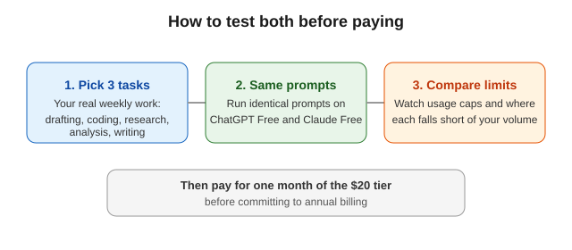

ChatGPT vs Claude (2026): Pricing, Models, and How to Choose
The short version
TL;DR: ChatGPT (GPT-5.5, Pro tier GPT-5.6 Sol Pro) and Claude (Opus 5, Sonnet 5) both cost $20/month at their mid tier as of August 2026, and both have $0 free tiers - pick by workflow, not hype.This comparison is for professionals deciding which AI assistant to pay for. Prices and model names below were verified on the official OpenAI and Anthropic pricing pages in August 2026. Model versions in this space change every few months, so treat any model-specific claim as a snapshot, not a permanent truth.
How do ChatGPT and Claude pricing compare in 2026?
Both companies offer a free tier, a ~$20 mid tier, and a premium tier starting at $100. The exact lineups differ, so the comparison is not one-to-one.
| Tier | ChatGPT (official pricing, Aug 2026) | Claude (official pricing, Aug 2026) |
|---|---|---|
| Free | $0 | $0 |
| Entry paid | Go - $8/month | (no direct equivalent) |
| Mid tier | Plus - $20/month | Pro - $20/month, or $17/month billed annually ($200 up front) |
| Premium | Pro - $100/month | Max - from $100/month (5x or 20x usage options) |
| Team/Business | Business and Enterprise (per user/month, annual plans) | Enterprise (custom pricing) |
Sources: OpenAI's pricing page and Anthropic's pricing page, both retrieved August 2026.
What models are current on each platform?
OpenAI's paid plans provide access to GPT-5.5, and the $100 ChatGPT Pro tier adds "Pro reasoning with GPT-5.6 Sol Pro," per the official pricing page. Anthropic's current flagship models are Claude Opus 5 and Claude Sonnet 5, announced on the Anthropic news page. Both companies ship new model versions on a regular cadence, so the flagship name will likely change within a year.
What does the $20 tier include on each side?
ChatGPT Plus ($20/month) includes everything in the $8 Go tier plus projects, scheduled tasks, and custom GPTs, per OpenAI's pricing page. Claude Pro ($20/month, or $17 on annual billing) includes everything in the free tier plus unlimited projects to organize chats and documents, per Anthropic's pricing page. At the $100 level, ChatGPT Pro adds the GPT-5.6 Sol Pro reasoning model and expanded projects and tasks, while Claude Max offers 5x or 20x more usage than Pro.
What do the other plans add?
ChatGPT has an entry paid tier called Go at $8/month that sits between Free and Plus, which is useful if you want more than the free tier without paying $20. Above Plus, ChatGPT Pro ($100/month) is positioned for heavy reasoning workloads with the GPT-5.6 Sol Pro model. For organizations, ChatGPT offers Business and Enterprise plans priced per user per month with annual plans available. Claude's lineup is shorter: Free, Pro, and Max, with Max offered at "5x" and "20x" usage levels from $100/month, and Enterprise for organizations at custom pricing. One structural difference worth noting: Claude Pro discounts to $17/month if you pay annually, while ChatGPT's individual plans are listed as monthly prices with no annual individual discount on the pricing page.

What about features like images, voice, and code?
Both assistants include multimodal chat, file uploads, and mobile and desktop apps as of 2026. Feature-level claims change rapidly and depend on region and plan, so this post does not rank either product on unverified feature lists. If a specific capability matters to you - image generation, voice mode, coding in an IDE, or long-document analysis - check the vendor's current feature documentation before paying.
How do you test both before paying?
Because the verifiable differences are pricing structure and plan lineup rather than a stable quality gap, the practical test is to run your own work through both free tiers. Pick three tasks you actually do weekly - drafting, data analysis, coding, writing, research - and run identical prompts through ChatGPT Free and Claude Free. Note where each hits usage limits, because limits differ by plan and change over time. If a free tier is not enough for your volume, pay for one month of the $20 tier rather than committing annually, then decide.

Which should you pick?
How do you decide in five minutes?
- Sign up for both free tiers and run your three most common real tasks through each.
- Compare where you hit limits: message caps and usage allowances differ and change often.
- Check your team's needs: ChatGPT has Business/Enterprise tiers, Claude has Enterprise with custom pricing.
- Revisit the decision every few months - model releases shift the balance regularly.
FAQ
Is Claude better than ChatGPT?
There is no stable, well-sourced answer: benchmark claims conflict and both vendors ship frequent updates. Pricing and workflow fit are the verifiable differences as of August 2026.
Which is cheaper, ChatGPT or Claude?
Both have a $20/month mid tier. Claude Pro is $17/month when billed annually; ChatGPT's entry paid tier (Go) is $8/month.
Do ChatGPT and Claude have free versions?
Yes, both offer $0 free tiers, per the official pricing pages.
What is GPT-5.6 Sol Pro?
Per OpenAI's pricing page, it is the "Pro reasoning" model available on the $100/month ChatGPT Pro tier.
What is Claude Max?
Per Anthropic's pricing page, Claude Max is a premium tier from $100/month offering 5x or 20x more usage than Pro.
Can you use both ChatGPT and Claude at the same time?
Yes. Neither vendor's terms require exclusivity, and many professionals keep both $20 tiers to use whichever fits the task. The cost consideration is that two subscriptions double the monthly spend.
How often do the models change?
Both vendors ship new flagship models regularly. OpenAI's pricing page references GPT-5.5 and GPT-5.6, and Anthropic's news page announces new Claude generations (Opus 5 and Sonnet 5 as of August 2026). Plan on re-evaluating at least once a year.
Do the listed prices include taxes?
No. The prices on both official pricing pages are base monthly prices; local sales taxes and VAT apply at checkout in most jurisdictions.